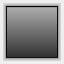
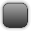
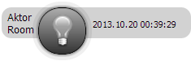
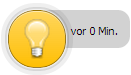
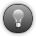
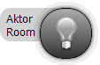
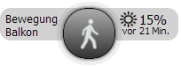
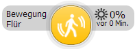

Gibt einen Schlüsselwort ein, über welches das Widget mit dem Filter ausgewertet wird.
Ein Widget kann in mehr als einem View gezeigt werden. Hier kann man einstellen in welchen Views es noch angezeigt werden soll.
Es erscheint an der gleichen Stelle in anderem View.
Schaltet Widget in Aktivzustand und zurück, um im Edit-Modus den Aktivzustand zu testen. Zustand wird nicht gespeichert.
Pfad zum Klenbild in der Mitte von dem Widget. Falls kein Aktivbild gesetzt ist, dann wird das Bild auch im Aktivzustand verwendet. Man kann die Bildgröße in der "Erweitert..."- Lasche einstellen.
Beschreibung von dem Widget. Das Feld wird mit dem Gerätenamen vorbelegt. Das konnte aber frei geändert werden.
Falls "Zeige Beschreibung"-Checkbox gesetzt ist, dann wird diese Beschreibung oben links auch im nicht Editmodus angezeigt.
Beschreibung dem Raum wo das Widget sich befindet. Wird automatisch beim auswälen von Homematic ID ausgefüllt. Danach kann man auf beliebiegen Wert die Raumbeshreibung ändern.
Homematic ID für Hauptzustand
Hier kann man die Stile für zwei Zustände einstellen.
Damit uberschreibt man vorgegebenen Stil für den Normalzustand.
Falls die "jQuery Stil anwenden:"- Option gesetzt ist, dann wird diese Einstellung ignoriert.
Falls die "Verstecken falls inaktiv:" - Option gesetzt ist, dann wird Widget im Normalzustand gar nicht angezeigt und diese Einstellung ist dann auch wirkungslos.
Damit uberschreibt man vorgegebenen Stil für den Normalzustand unter dem Mauskursor.
Falls die "jQuery Stil anwenden:"- Option gesetzt ist, dann wird diese Einstellung ignoriert.
Falls die "Verstecken falls inaktiv:" - Option gesetzt ist, dann wird Widget im Normalzustand gar nicht angezeigt und diese Einstellung ist dann auch wirkungslos.
Damit uberschreibt man vorgegebenen Stil für den Aktivezustand.
Falls die "jQuery Stil anwenden:"- Option gesetzt ist, dann wird diese Einstellung ignoriert.
Damit uberschreibt man vorgegebenen Stil für den Aktivezustand unter dem Mauskursor.
Falls die "jQuery Stil anwenden:"- Option gesetzt ist, dann wird diese Einstellung ignoriert.
Hier kann man die erweiterte Einstellungen vorzunehmen.
Stellt den Radius von den Widgetecken ein.
|  |  | |
| Radius 0 | Radius 25% von der Breite | Radius 50% von der Breite |
Stellt ein, ob die Klassen von aktueller jQuery-Theme für die Darstellung verwendet sein sollten.
Falls die Option gewählt ist, dann werden folgende CSS-Klassen verwendet:
- Normalzustand: "ui-state-default",
- Normalzustand unter dem Mauskursor: "ui-state-default",
- Aktivezustand: "ui-state-active"
- Aktivezustand unter dem Mauskursor: "ui-state-active"
Die Stil-Einstellüngen werden mit dieser Option ignoriert.
Stellt die Kelinbildbreite ein. Die Bildbreite darf nicht grösse als die Widgetbreite sein.
Stellt die Kelinbildhöhe ein. Die Bildhöhe darf nicht grösse als die Widgethöhe sein.
Beim betätigen von "Auto"-Knopf wird einmalig die passende Bildbreite und Grösse ausgeählt. Im Normalmodus hat den Knopf keine Auswirkung.
Pfad zum Klenbild in der Mitte von dem Widget in Aktivezustand. Falls kein Aktivbild gesetzt ist, dann wird das "Kleinbild" verwendet. Es ist empfohlen, dass das Normalbild und Aktivebild die gleiche Grösse haben, damit bei der Zustandsändrung keine Sprünge von dem Bild passieren.
Falls diese Checkbox gesetzt ist, dann wird das Widget nur im Aktivmodus sichtbar. Normalleweise wenn Zustand "true" ist. Z.B. wenn Batterie fast leer ist, oder falls Aktivebedienung zugeschlagen hat.
Ob die Zeit von der letzten Änderung angezeiugt werden soll.
|  |  |
| Immer zeigen | Ausblenden nach X Stunden |
Zeige kein Hintergrund beim Widget
|  |  |
| Mit dem Hintergrund | Ohne Hintergrund |
Zeige Name und Raum vom Widget.

|  |  |